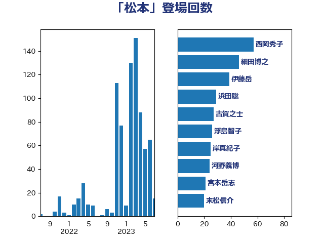

単語「松本」

| 西岡秀子 | 国民民主党 | 57 回 |
| 細田博之 | 自由民主党 | 46 回 |
| 伊藤岳 | 日本共産党 | 39 回 |
| 浜田聡 | NHK党 | 29 回 |
| 古賀之士 | 立憲民主党 | 27 回 |
| 浮島智子 | 公明党 | 26 回 |
| 岸真紀子 | 立憲民主党 | 25 回 |
| 河野義博 | 公明党 | 24 回 |
| 宮本岳志 | 日本共産党 | 21 回 |
| 末松信介 | 自由民主党 | 20 回 |
| 野田国義 | 立憲民主党 | 15 回 |
| 小西洋之 | 立憲民主党 | 15 回 |
| 小沢雅仁 | 立憲民主党 | 15 回 |
| 竹詰仁 | 国民民主党 | 14 回 |
| 松本尚 | 自由民主党 | 12 回 |
| 杉田水脈 | 自由民主党 | 12 回 |
| 伊東信久 | 日本維新の会 | 12 回 |
| 道下大樹 | 立憲民主党 | 10 回 |
| 柚木道義 | 立憲民主党 | 10 回 |
| 重徳和彦 | 立憲民主党 | 9 回 |
| 松本剛明 | 自由民主党 | 9 回 |
| おおつき紅葉 | 立憲民主党 | 9 回 |
| 海江田万里 | 立憲民主党 | 8 回 |
| 石川香織 | 立憲民主党 | 7 回 |
| 守島正 | 日本維新の会 | 7 回 |
| 赤嶺政賢 | 日本共産党 | 6 回 |
| 中島克仁 | 立憲民主党 | 6 回 |
| 谷田川元 | 立憲民主党 | 5 回 |
| 岸田文雄 | 自由民主党 | 5 回 |
| 山口俊一 | 自由民主党 | 5 回 |
| 伊藤孝恵 | 国民民主党 | 5 回 |
| 上田清司 | 国民民主党 | 5 回 |
| 足立康史 | 日本維新の会 | 4 回 |
| 舞立昇治 | 自由民主党 | 4 回 |
| 河野太郎 | 自由民主党 | 4 回 |
| 永岡桂子 | 自由民主党 | 4 回 |
| 橋本岳 | 自由民主党 | 4 回 |
| 松木けんこう | 立憲民主党 | 4 回 |
| 平口洋 | 自由民主党 | 4 回 |
| 市村浩一郎 | 日本維新の会 | 4 回 |
| 山下貴司 | 自由民主党 | 4 回 |
| 尾辻秀久 | 無所属 | 4 回 |
| 大野敬太郎 | 自由民主党 | 4 回 |
| 塚田一郎 | 自由民主党 | 4 回 |
| 勝目康 | 自由民主党 | 4 回 |
| 加藤勝信 | 自由民主党 | 4 回 |
| 馬場雄基 | 立憲民主党 | 3 回 |
| 鎌田さゆり | 立憲民主党 | 3 回 |
| 逢坂誠二 | 立憲民主党 | 3 回 |
| 緑川貴士 | 立憲民主党 | 3 回 |
| 紙智子 | 日本共産党 | 3 回 |
| 神谷裕 | 立憲民主党 | 3 回 |
| 湯原俊二 | 立憲民主党 | 3 回 |
| 根本匠 | 自由民主党 | 3 回 |
| 柳ヶ瀬裕文 | 日本維新の会 | 3 回 |
| 松本洋平 | 自由民主党 | 3 回 |
| 杉本和巳 | 日本維新の会 | 3 回 |
| 大西英男 | 自由民主党 | 3 回 |
| 大石あきこ | れいわ新選組 | 3 回 |
| 加田裕之 | 自由民主党 | 3 回 |
| 佐藤啓 | 自由民主党 | 3 回 |
| 佐藤信秋 | 自由民主党 | 3 回 |
| 仁比聡平 | 日本共産党 | 3 回 |
| 中根一幸 | 自由民主党 | 3 回 |
| 中司宏 | 日本維新の会 | 3 回 |
| 上野賢一郎 | 自由民主党 | 3 回 |
| 三ッ林裕巳 | 自由民主党 | 3 回 |
| 高橋千鶴子 | 日本共産党 | 2 回 |
| 高市早苗 | 自由民主党 | 2 回 |
| 長友慎治 | 国民民主党 | 2 回 |
| 藤井比早之 | 自由民主党 | 2 回 |
| 芳賀道也 | 国民民主党 | 2 回 |
| 緒方林太郎 | 無所属 | 2 回 |
| 石橋通宏 | 立憲民主党 | 2 回 |
| 石井準一 | 自由民主党 | 2 回 |
| 牧山ひろえ | 立憲民主党 | 2 回 |
| 片山大介 | 日本維新の会 | 2 回 |
| 浅川義治 | 日本維新の会 | 2 回 |
| 森田俊和 | 立憲民主党 | 2 回 |
| 松野博一 | 自由民主党 | 2 回 |
| 杉尾秀哉 | 立憲民主党 | 2 回 |
| 斉藤鉄夫 | 公明党 | 2 回 |
| 手塚仁雄 | 立憲民主党 | 2 回 |
| 平林晃 | 公明党 | 2 回 |
| 島尻安伊子 | 自由民主党 | 2 回 |
| 岡本あき子 | 立憲民主党 | 2 回 |
| 山本博司 | 公明党 | 2 回 |
| 奥野総一郎 | 立憲民主党 | 2 回 |
| 大西健介 | 立憲民主党 | 2 回 |
| 塩川鉄也 | 日本共産党 | 2 回 |
| 城内実 | 自由民主党 | 2 回 |
| 坂本祐之輔 | 立憲民主党 | 2 回 |
| 土田慎 | 自由民主党 | 2 回 |
| 吉田とも代 | 日本維新の会 | 2 回 |
| 古屋範子 | 公明党 | 2 回 |
| 務台俊介 | 自由民主党 | 2 回 |
| 伊波洋一 | 無所属 | 2 回 |
| 今枝宗一郎 | 自由民主党 | 2 回 |
| 中西祐介 | 自由民主党 | 2 回 |
| 中川康洋 | 公明党 | 2 回 |
| 中川宏昌 | 公明党 | 2 回 |
| 黄川田仁志 | 自由民主党 | 1 回 |
| 高木真理 | 立憲民主党 | 1 回 |
| 高木毅 | 自由民主党 | 1 回 |
| 高木宏壽 | 自由民主党 | 1 回 |
| 馬場成志 | 自由民主党 | 1 回 |
| 青木愛 | 立憲民主党 | 1 回 |
| 阿部知子 | 立憲民主党 | 1 回 |
| 長谷川英晴 | 自由民主党 | 1 回 |
| 鈴木馨祐 | 自由民主党 | 1 回 |
| 輿水恵一 | 公明党 | 1 回 |
| 赤池誠章 | 自由民主党 | 1 回 |
| 谷公一 | 自由民主党 | 1 回 |
| 西村智奈美 | 立憲民主党 | 1 回 |
| 蓮舫 | 立憲民主党 | 1 回 |
| 義家弘介 | 自由民主党 | 1 回 |
| 米山隆一 | 立憲民主党 | 1 回 |
| 竹内真二 | 公明党 | 1 回 |
| 穀田恵二 | 日本共産党 | 1 回 |
| 稲津久 | 公明党 | 1 回 |
| 福重隆浩 | 公明党 | 1 回 |
| 福島みずほ | 社会民主党 | 1 回 |
| 福山哲郎 | 立憲民主党 | 1 回 |
| 田村智子 | 日本共産党 | 1 回 |
| 田所嘉徳 | 自由民主党 | 1 回 |
| 田島麻衣子 | 立憲民主党 | 1 回 |
| 猪瀬直樹 | 日本維新の会 | 1 回 |
| 牧原秀樹 | 自由民主党 | 1 回 |
| 片山さつき | 自由民主党 | 1 回 |
| 熊田裕通 | 自由民主党 | 1 回 |
| 滝波宏文 | 自由民主党 | 1 回 |
| 江藤拓 | 自由民主党 | 1 回 |
| 水野素子 | 立憲民主党 | 1 回 |
| 武井俊輔 | 自由民主党 | 1 回 |
| 榛葉賀津也 | 国民民主党 | 1 回 |
| 森山浩行 | 立憲民主党 | 1 回 |
| 森屋宏 | 自由民主党 | 1 回 |
| 梅谷守 | 立憲民主党 | 1 回 |
| 梅村聡 | 日本維新の会 | 1 回 |
| 松村祥史 | 自由民主党 | 1 回 |
| 松原仁 | 立憲民主党 | 1 回 |
| 本庄知史 | 立憲民主党 | 1 回 |
| 打越さく良 | 立憲民主党 | 1 回 |
| 後藤祐一 | 立憲民主党 | 1 回 |
| 平木大作 | 公明党 | 1 回 |
| 川崎ひでと | 自由民主党 | 1 回 |
| 島村大 | 自由民主党 | 1 回 |
| 岩渕友 | 日本共産党 | 1 回 |
| 岡田直樹 | 自由民主党 | 1 回 |
| 山本剛正 | 日本維新の会 | 1 回 |
| 尾身朝子 | 自由民主党 | 1 回 |
| 小野泰輔 | 日本維新の会 | 1 回 |
| 小池晃 | 日本共産党 | 1 回 |
| 小宮山泰子 | 立憲民主党 | 1 回 |
| 小倉將信 | 自由民主党 | 1 回 |
| 寺田学 | 立憲民主党 | 1 回 |
| 大岡敏孝 | 自由民主党 | 1 回 |
| 大串博志 | 立憲民主党 | 1 回 |
| 塩崎彰久 | 自由民主党 | 1 回 |
| 古川俊治 | 自由民主党 | 1 回 |
| 北神圭朗 | 無所属 | 1 回 |
| 保岡宏武 | 自由民主党 | 1 回 |
| 伊藤忠彦 | 自由民主党 | 1 回 |
| 仁木博文 | 無所属 | 1 回 |
| 井原巧 | 自由民主党 | 1 回 |
| 中谷一馬 | 立憲民主党 | 1 回 |
| 下条みつ | 立憲民主党 | 1 回 |
| 上田英俊 | 自由民主党 | 1 回 |
| 三浦信祐 | 公明党 | 1 回 |
| 三反園訓 | 無所属 | 1 回 |
| 三上えり | 立憲民主党 | 1 回 |